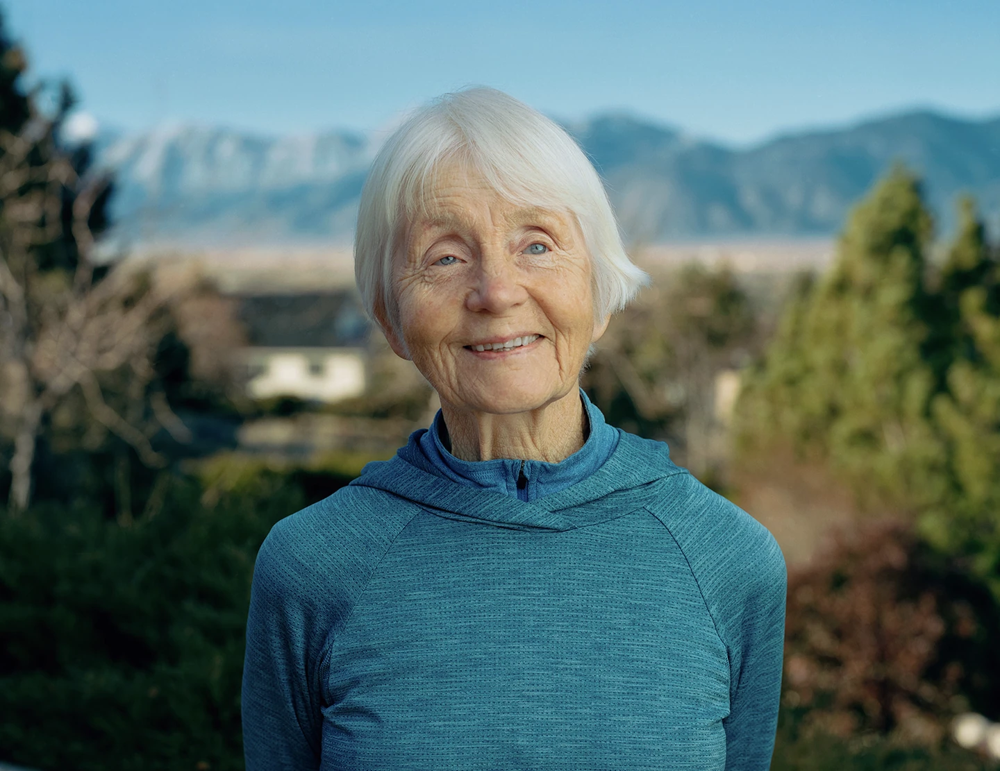
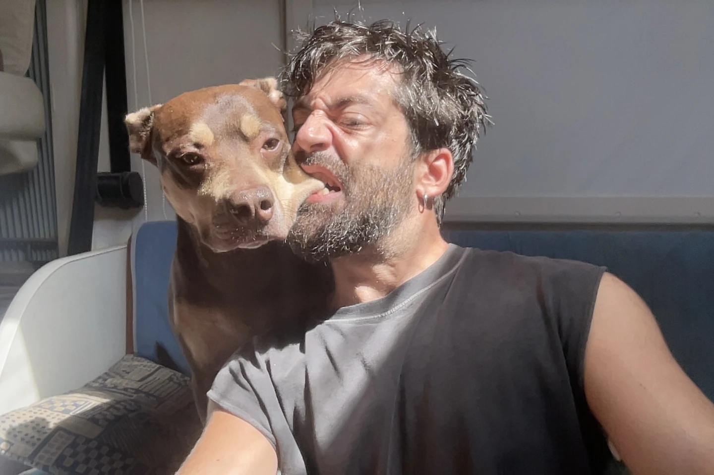

A project built around one question.
What is actually keeping the work stuck? Most advice answers a different question—how to push harder. We start earlier, and treat the block as a symptom worth understanding before it is worth fixing.
The platform brings three things together: a synthesis of research into where creative work gets stuck, a repeatable method for reading it, and real coaching and creative-consulting support. It exists for anyone who makes—artists and designers, but also founders, researchers, strategists, students and teams.
See the 7+1 map
Understanding before prescription.
Creative difficulty is too often met with slogans, shame or universal productivity advice—all aimed at the symptom. We start with a different question: what is actually driving the stuckness underneath the block?
Evidence-informed
Research and established theory guide the enquiry, with clear language about uncertainty and limits.
Human and practical
The person matters, and so do the brief, workflow, decision, environment and work itself.
Not woo
No manifestation language, no heroic myths, no promise to unlock a hidden genius—just careful attention and useful work.
Started by Mirco.
A Creative Block was founded by Mirco Fragomena. My own block was never an inability to make—it was direction. For years I measured myself against a narrow idea of "creative" and kept feeling I was doing it wrong, until I realised my strongest work was analytic, strategic and systemic: seeing patterns, organising complexity, connecting people and ideas. That experience, and the research it sent me into, became this project.
I am a MOE-certified coach and a member of the Association for Coaching, so the work is grounded in trained, accountable practice—held to a professional code and ongoing supervision, not just opinion.
